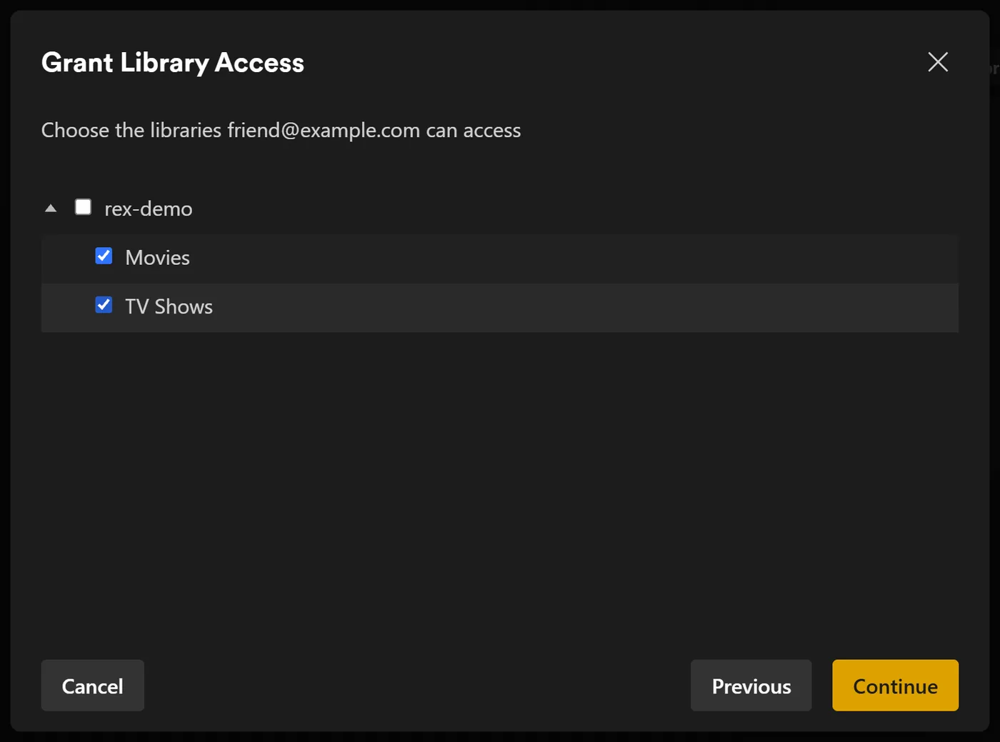
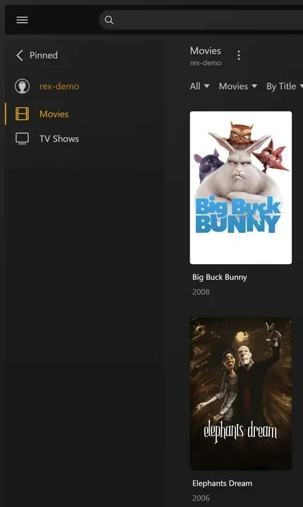
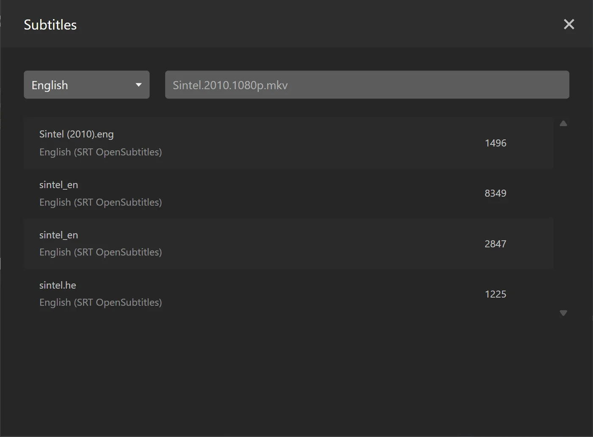

rex مع تطبيقك الخاص
rex هو خادم وسائط للتطبيقات الرسمية لـ Plex، ولا يملك أي ملفات. تراه تطبيقات Plex الرسمية كخادم Plex عادي. برنامج آخر، تسميه هذه الصفحة تطبيقك، يخبر rex بما في مكتبتك ويقدم الملفات. عندما تضغط على تشغيل، يبث rex الملف مباشرة من تطبيقك. لا يتم تنزيل أي شيء أولاً.
تأخذك هذه الصفحة من الصفر إلى تشغيل فيلم، خطوة بخطوة. وهي لا تفترض تطبيقاً معيناً. تشرح بالضبط ما يتوقعه rex من التطبيق، حتى تتحقق أن تطبيقك يفعل ذلك، أو تبني تطبيقاً بنفسك. كل خطوة تذكر ما تفعله، ولماذا تهم، وما الذي يجب أن تراه قبل أن تنتقل إلى التالية.
أربعة أمور يجب معرفتها قبل أن تبدأ:
- تطبيقك يقدم الملفات. يجلب rex كل بايت من تطبيقك عبر HTTP أو HTTPS، تماماً مثلما ينزل المتصفح ملفاً. لا يحتفظ rex بأي ملفات ولا يحتاج إلى قرص أو تركيب لتخزين الوسائط.
- تطبيقك يخبر rex بما لديه. يرسل إلى rex قائمة بالملفات عبر واجهة feed API الخاصة بـ rex، ثم كل تغيير بعد ذلك. لا يقوم rex بعرض أي مجلد أو فحص أي شيء.
- تطبيقك يحدد ما هو كل ملف. يذكر إن كان الملف فيلماً أو حلقة، وإلى أي عمل ينتمي (بمعرف IMDb ومعرف TMDB)، وبالنسبة للحلقة، رقم موسمها ورقمها. لا يخمّن rex أبداً من اسم الملف.
- Plex يصف المحتوى. بمجرد أن يكون rex على حساب Plex، يعرض كل عنوان بالاسم والملصق والملخص وأسماء الحلقات الموجودة في بيانات Plex الوصفية لتلك المعرفات. أما الأشياء التي لا يعرفها أي وكيل في Plex، فإن تطبيقك يسميها بنفسه: انظر بناء إضافات rex.
rex مجاني للاستخدام الشخصي (PolyForm Noncommercial): لا توجد فئة رعاية ولا حاجة إلى حساب لتنزيله. انظر rex.debridmediamanager.com. هل لديك هاتف أو صندوق تلفاز فقط؟ يشغّل rex لأندرويد rex وإضافاته عليه. أما للرعاة، فإن zurg+rex، وهو خادم Plex على هاتفك، يربط أيضاً مكتبة debrid ومكتبة Usenet الخاصة بك بـ rex.
قبل أن تبدأ
ما الذي يجب أن يفعله تطبيقك
أرسل هذه القائمة إلى من يبني تطبيقك. مرجع واجهة برمجة rex الكامل موجود في docs/feed-api.md.
الخطوة 1. تثبيت rex
ماذا يفعل. ينزّل rex داخل ~/rex ($HOME\rex على ويندوز) ويشغّله كخدمة، مع كل ما تحتاجه الخطوات اللاحقة. الخطوات التي تلي هذه لا تحتاج إعادة تشغيل، والأقسام الاختيارية أدناه فقط هي التي تحتاجها.
لماذا هذا مهم. rex هو ما تتصل به تطبيقات Plex لديك. أول تشغيل ينشئ rex.db، وفيه مكتباتك وكل ما يرسله تطبيقك وسجل مشاهدتك.
على لينكس يمكنك تشغيل صورة rex من Docker بدلاً من ذلك: انظر
mkdir -p ~/rex && cd ~/rex
TAG=$(curl -fsSL 'https://api.github.com/repos/debridmediamanager/rex/releases?per_page=1' | sed -n 's/.*"tag_name": *"\([^"]*\)".*/\1/p' | head -1)
P=$(uname -s | tr A-Z a-z)-$(uname -m | sed 's/x86_64/amd64/;s/aarch64/arm64/')
curl -fL "https://github.com/debridmediamanager/rex/releases/download/$TAG/rex-$TAG-$P.tar.gz" | tar xz --strip-components=1في PowerShell:
New-Item -ItemType Directory -Force $HOME\rex | Out-Null; cd $HOME\rex
$tag = (Invoke-RestMethod 'https://api.github.com/repos/debridmediamanager/rex/releases?per_page=1')[0].tag_name
curl.exe -fLO "https://github.com/debridmediamanager/rex/releases/download/$tag/rex-$tag-windows-amd64.zip"
tar -xf "rex-$tag-windows-amd64.zip" --strip-components=1; Remove-Item "rex-$tag-windows-amd64.zip"هذا يأخذ أحدث نسخة من rex لجهازك، وعادةً تكون نسخة nightly.
اعرف عنوان rex على الشبكة المحلية LAN، أي عنوانه على شبكتك المنزلية. على لينكس يطبع hostname -I عدة عناوين: خذ العنوان الذي على شبكتك المنزلية، لا العنوان الذي يبدأ بـ 172.17. (Docker) أو 100. (Tailscale). على macOS يطبعه ipconfig getifaddr en0 (أو en1 إذا لم يطبع الأمر شيئاً). على ويندوز يعرضه ipconfig باسم IPv4 Address تحت محول Wi-Fi أو Ethernet لديك. تكتب هذه الصفحة العنوان 192.168.1.20 في كل مكان: ضع عنوانك أنت مكانه. تصل تطبيقات Plex وتطبيقك وأوامرك الخاصة إلى rex عبر هذا العنوان.
هل يعمل Plex Media Server على الجهاز نفسه؟ أنهِ أمر التشغيل الخاص بـ rex أدناه بـ --port 32500، واستخدم 32500 في كل مكان يذكر فيه أمر أو إعداد الرقم 32400، بما في ذلك قاعدة جدار حماية ويندوز. Plex يحتفظ أصلاً بالمنفذ 32400 والمنافذ التي تستخدمها التطبيقات للعثور على الخوادم، وعلى أي منفذ آخر يترك rex هذه المنافذ لـ Plex. عندها ستجد تطبيقاتك خادمين باسم الجهاز: rex هو الخادم الذي شاركته معك، واسم الحساب الجديد بجانبه. بعد أن يصبح rex على حساب Plex الخاص به (
الآن اجعله خدمة:
أنشئ ~/.config/systemd/user/rex.service:
mkdir -p ~/.config/systemd/user
nano ~/.config/systemd/user/rex.service[Unit]
Description=rex
After=network-online.target
[Service]
WorkingDirectory=%h/rex
EnvironmentFile=-%h/rex/rex.env
ExecStart=%h/rex/rex
Restart=always
RestartSec=5
[Install]
WantedBy=default.targetsystemctl --user daemon-reload
systemctl --user enable --now rex
sudo loginctl enable-linger "$USER"
journalctl --user -u rex -fأمر التشغيل الخاص بـ rex هو سطر ExecStart، وتوضع المفاتيح في ~/rex/rex.env، بمعدل NAME=value في كل سطر. بعد أي تغيير، يعيد الأمر systemctl --user daemon-reload && systemctl --user restart rex تشغيل rex. يعرض journalctl --user -u rex -f سجله. ويُبقي loginctl enable-linger rex يعمل عند تسجيل الخروج.
يشغّل run.sh rex داخل مجلده، ويشغّل LaunchAgent الملف run.sh عند تسجيل دخولك:
cp ~/rex/examples/run.sh.example ~/rex/run.sh
mkdir -p ~/Library/LaunchAgents
cat > ~/Library/LaunchAgents/com.rex.plist <<PLIST
<?xml version="1.0" encoding="UTF-8"?>
<!DOCTYPE plist PUBLIC "-//Apple//DTD PLIST 1.0//EN" "http://www.apple.com/DTDs/PropertyList-1.0.dtd">
<plist version="1.0"><dict>
<key>Label</key><string>com.rex</string>
<key>ProgramArguments</key><array><string>/bin/bash</string><string>$HOME/rex/run.sh</string></array>
<key>RunAtLoad</key><true/><key>KeepAlive</key><true/>
<key>StandardOutPath</key><string>$HOME/rex/rex.log</string>
<key>StandardErrorPath</key><string>$HOME/rex/rex.log</string>
</dict></plist>
PLIST
launchctl load ~/Library/LaunchAgents/com.rex.plist
tail -F ~/rex/rex.logأمر التشغيل الخاص بـ rex هو السطر الأخير في ~/rex/run.sh، وتوضع المفاتيح في ~/rex/rex.env، بمعدل NAME=value في كل سطر. بعد أي تغيير، يعيد الأمر launchctl kickstart -k gui/$(id -u)/com.rex تشغيل rex. يعرض tail -f ~/rex/rex.log سجله.
يعمل rex طالما أنت مسجّل الدخول إلى الماك. إذا كان الماك يُعاد تشغيله وحده، ففعّل تسجيل الدخول التلقائي (System Settings، ثم Users & Groups). إذا كان جدار حماية macOS مفعّلاً، فاسمح لـ rex حين يسأل macOS، أو أضف ~/rex/rex تحت Options الخاصة بجدار الحماية.
افتح PowerShell كمسؤول وانتقل إلى مجلد rex بالأمر cd $HOME\rex. أولاً أنشئ run.cmd، وهو يشغّل rex داخل مجلده ويكتب سجله في rex.log. ستعرض Notepad إنشاء الملف:
notepad run.cmd@echo off
cd /d "%~dp0"
rex.exe 2>> rex.logاحفظه. ثم اسمح لشبكتك عبر جدار حماية ويندوز إلى منفذ rex والمنفذين الخاصين بالاكتشاف، وشغّل rex الآن وكلما سجلت الدخول:
New-NetFirewallRule -DisplayName rex -Protocol TCP -LocalPort 32400
New-NetFirewallRule -DisplayName "rex discovery" -Protocol UDP -LocalPort 32410,32414
$settings = New-ScheduledTaskSettingsSet -ExecutionTimeLimit 0 -AllowStartIfOnBatteries -DontStopIfGoingOnBatteries
Register-ScheduledTask rex -Action (New-ScheduledTaskAction -Execute "$HOME\rex\run.cmd") -Trigger (New-ScheduledTaskTrigger -AtLogOn -User $env:USERNAME) -Settings $settings
Start-ScheduledTask rex; Start-Sleep 3
Get-Content rex.log -Waitأمر التشغيل الخاص بـ rex هو سطر rex.exe في run.cmd، وتوضع المفاتيح فوقه، بمعدل set NAME=value في كل سطر. بعد أي تغيير، يعيد الأمر Stop-Process -Name rex; Start-Sleep 1; Start-ScheduledTask rex تشغيل rex. يعرض Get-Content $HOME\rex\rex.log -Wait سجله.
هل شغّلت rex يدوياً في PowerShell بدلاً من ذلك؟ عندها يكون سجله في تلك النافذة فقط، دون rex.log، ولا توجد مهمة تشغّله بعد إعادة التشغيل. يحتفظ rex بقاعدة بياناته ومطالبته بالملكية في المجلد الذي يبدأ منه، لذا فإن rex الذي يبدأ من مجلد آخر يصبح خادماً جديداً غير مطالَب به. أوقفه بـ Ctrl+C، ثم شغّله مجدداً من مجلد rex بالخيارات نفسها، أو الأفضل أن تُعدّ المهمة أعلاه.
يعمل rex طالما أنت مسجّل الدخول إلى ويندوز، في نافذة خاصة به، فاتركها مفتوحة. في PowerShell، اكتب curl.exe حيثما تقول هذه الصفحة curl، لأن الأمر curl الخاص بـ Windows PowerShell أمر مختلف.
ما الذي يجب أن تراه. من بين أول الأسطر:
INFO seeded rex.db: an empty library named yourhost, machine=...
INFO no source yet: a source registers itself once pointed at this server (PUT /rex/sources/{name}, docs/feed-api.md)
INFO claim state: unclaimed
INFO rex on http://192.168.1.20:32400 machine=... items=0 parts=proxyيسمّي rex نفسه باسم الجهاز، وتعرض تطبيقات Plex هذا الاسم. الرسالة no source yet طبيعية، فلم يسجّل أي تطبيق بعد. اترك السجل مفتوحاً.
الخطوة 2. شاهده يعمل يدويًا
ما الذي تفعله؟ تقوم بدور تطبيقك لفيلم واحد، عبر خادم ملفات مؤقت وأمرين من curl.
لماذا هي مهمة؟ تثبت أن rex يعمل على هذا الجهاز قبل أن يدخل تطبيقك في الصورة. إذا نجحت هذه الخطوة ولم ينجح تطبيقك، فالمشكلة في تطبيقك. تخطَّ هذه الخطوة إذا كان تطبيقك مُعدًّا من قبل.
تحتاج إلى ffprobe وخادم ويب صغير وملف فيديو واحد. تسجّل مجلد الملف لدى rex باسم test، ثم ترسل الملف إلى rex مع تحديد أنه فيلم Sintel (IMDb tt1727587، وTMDB 45745) ومعه مخرجات ffprobe.
ثبّت ffprobe وjq (sudo apt install -y ffmpeg jq على Linux، أو brew install ffmpeg jq على macOS). ضع الملف في مكان يستطيع خادم ويب صغير أن يقدّمه:
mkdir -p ~/rex-test/movies/Sintel.2010
cp /path/to/any-video.mkv ~/rex-test/movies/Sintel.2010/Sintel.2010.mkv
cd ~/rex-test
python3 -m http.server 8099 --bind 127.0.0.1 &سجّله لدى rex:
curl -s -X PUT http://192.168.1.20:32400/rex/sources/test \
-H 'Content-Type: application/json' -d '{"url": "http://127.0.0.1:8099"}'أرسل الملف إلى rex:
P=movies/Sintel.2010/Sintel.2010.mkv
jq -n --arg p "$P" \
--argjson probe "$(ffprobe -v quiet -print_format json -show_format -show_streams "$P")" \
'{items: [{id: $p, path: $p, kind: "movie", ids: {imdb: "tt1727587", tmdb: 45745}, media_info: $probe}]}' \
| curl -s -X POST http://192.168.1.20:32400/rex/feed/test/items \
-H 'Content-Type: application/json' --data-binary @-ثبّت ffprobe وPython بالأمرين winget install Gyan.FFmpeg وwinget install Python.Python.3.13، ثم افتح نافذة PowerShell جديدة. ضع الملف في مكان يستطيع خادم ويب صغير أن يقدّمه:
New-Item -ItemType Directory -Force $HOME\rex-test\movies\Sintel.2010 | Out-Null
Copy-Item C:\path\to\any-video.mkv $HOME\rex-test\movies\Sintel.2010\Sintel.2010.mkv
cd $HOME\rex-test
$server = Start-Process py '-m http.server 8099 --bind 127.0.0.1' -WindowStyle Hidden -PassThruسجّله لدى rex:
Invoke-RestMethod -Method Put http://192.168.1.20:32400/rex/sources/test -ContentType application/json -Body '{"url": "http://127.0.0.1:8099"}'أرسل الملف إلى rex:
$p = 'movies/Sintel.2010/Sintel.2010.mkv'
$probe = ffprobe -v quiet -print_format json -show_format -show_streams $p | Out-String | ConvertFrom-Json
$item = @{ id = $p; path = $p; kind = 'movie'; ids = @{ imdb = 'tt1727587'; tmdb = 45745 }; media_info = $probe }
Invoke-RestMethod -Method Post http://192.168.1.20:32400/rex/feed/test/items -ContentType application/json -Body (ConvertTo-Json @{ items = @($item) } -Depth 20)يعرض PowerShell ردود rex على شكل قوائم بدلًا من JSON.
ماذا يفترض أن ترى؟ الرد هو {"created":1,"updated":0,"held":0,"unchanged":0}، ويطبع سجل rex:
INFO FEED identified "Sintel.2010" -> movie tmdb:45745 (placed)
INFO FEED test upsert: 1 created, 0 updated, 0 held, 0 unchanged, 0 rejectedأصبح Sintel الآن في Movies، ويُشغَّل من خلال خادم الويب الصغير. لا يستطيع أي تطبيق Plex فتح rex قبل
التنظيف قبل المتابعة: حذف مصدر الاختبار يزيل كل ما أرسله. يرد الطلب الأول بمسار confirm؛ أرسل طلب DELETE إلى هذا المسار خلال خمس دقائق.
curl -s -X DELETE http://192.168.1.20:32400/rex/sources/test
curl -s -X DELETE "http://192.168.1.20:32400/rex/sources/test/confirm/<code from the answer>"
kill %1Invoke-RestMethod -Method Delete http://192.168.1.20:32400/rex/sources/test
Invoke-RestMethod -Method Delete "http://192.168.1.20:32400/rex/sources/test/confirm/<code from the answer>"
Stop-Process -InputObject $serverإن لم ينجح الأمر.
"held":1:media_infoمفقود أو لا يحتوي على أي مسارات (streams). تحقّق من أنffprobeطبع JSON للملف.- رد يحتوي على
rejected: الملف ليس فيديو بحسب امتداده، أو هو عينة (sample)، أو لا يحتوي علىidأوpath، أو أن المسار مشوّه، أو أنidآخر مرتبط بالفعل بهذا المسار. يوضح الرد وسجل rex كل سبب. 404 no such source: لم يُنفَّذ الطلبPUT /rex/sources/testأولًا.
الخطوة 3. أضفه إلى حساب Plex
Что это делает. Регистрирует rex в аккаунте Plex так же, как вы регистрируете настоящий Plex Media Server, и открывает к нему доступ вашему собственному аккаунту.
Почему это важно. rex берёт название, постер, описание и названия эпизодов для каждого тайтла из собственных метаданных Plex, а запрашивать их он может только после того, как попадёт в аккаунт. Всё, что ваше приложение отправляет до привязки, появляется с именем сразу после её завершения, а Fix Match до этого момента ничего не предложит. Кроме того, привязка убирает уведомление «unclaimed» и нужна, если вы хотите
Для этого используйте новый аккаунт Plex, а не свой. rex не разрабатывается Plex, и Plex может принять меры против аккаунта, который его регистрирует. Держите свой основной аккаунт, с историей просмотров, друзьями и любой подпиской Plex Pass, в стороне: создайте новый бесплатный аккаунт на plex.tv с адресом электронной почты, который вы нигде больше не используете, зарегистрируйте rex на нём и откройте доступ к rex своему основному аккаунту. Тогда вы смотрите, войдя под собственным именем, так же, как смотрели бы сервер друга. Пока этот шаг не выполнен, rex ничего не воспроизводит.
تسجيل rex على الحساب الجديد
- سجّل الدخول إلى plex.tv بالحساب الجديد، وافتح plex.tv/claim وانسخ الرمز. تنتهي صلاحيته بعد حوالي خمس دقائق.
-
على الجهاز الذي يعمل عليه rex (
curl.exeعلى ويندوز):curl -X POST "http://192.168.1.20:32400/myplex/claim?token=claim-xxxxxxxxxxxx" curl -s http://192.168.1.20:32400/identity
ما يجب أن تراه. الأمر الثاني يعرض claimed="1"، وملف claim_state.json موجود في مجلد rex. احتفظ بنسخة احتياطية من هذا الملف: بدونه سيحتاج rex إلى ربط جديد، ويرفض rex ربطًا ثانيًا ما دام الملف موجودًا. من الآن فصاعدًا تصل العناوين مع أسمائها وملصقاتها، دون الحاجة إلى إعادة تشغيل.
إن لم يحدث ذلك.
- يرد الأمر الأول بالرمز
409معrex: already claimed: rex مرتبط بحساب Plex من قبل. - يرد بـ
500 Internal Server Errorويسجّل rex الرسالةclaim exchange failed: الرمز انتهت صلاحيته أو استُخدم من قبل. احصل على رمز جديد من plex.tv/claim.
شاركه مع حسابك الخاص
- ما زلت مسجّلاً بالحساب الجديد، افتح app.plex.tv، ثم Settings (أيقونة المفتاح)، وManage Library Access، وGrant Library Access.
- اكتب اسم المستخدم أو البريد الإلكتروني الخاص بحسابك، واختر خادم rex والمكتبتين Movies وTV Shows، ثم أرسل الدعوة.
- سجّل الخروج، وادخل باسمك أنت، واقبل الدعوة. ستصلك بالبريد الإلكتروني وتظهر أيضاً في app.plex.tv.


ما الذي يجب أن تراه. عند تسجيل دخولك باسمك، تعرض تطبيقات Plex خادم rex بجانب خوادمك الخاصة، مع المكتبتين. سجلّ المشاهدة الخاص بك على rex يخصّك وحدك، ويبقى منفصلاً عن سجلّ الحساب الجديد. وشاركه بالطريقة نفسها مع أي شخص آخر في منزلك.
الخطوة 4. ربط تطبيقك
ما الذي تفعله. توجّه تطبيقك إلى rex. يسجّل تطبيقك نفسه، ثم يرسل مكتبته كاملة، ثم يرسل كل تغيير فور حدوثه.
لماذا هذا مهم. هذه هي الصلة الوحيدة بين الاثنين. ليس لدى rex إعداد خاص بتطبيقك: تطبيقك هو من يجد rex، وليس العكس.
أعطِ تطبيقك عنوان rex، وهو http://192.168.1.20:32400. طريقة إدخاله تختلف حسب تطبيقك.
ما الذي يجب أن تراه. تطبع سجلات rex، تحت الاسم الذي سجّل به تطبيقك:
INFO SOURCES myapp registered at http://192.168.1.20:8080
INFO SOURCES PUT /rex/sources/myapp -> 200
INFO FEED myapp upsert: 0 created, 0 updated, 200 held, 0 unchanged, 0 rejected
INFO FEED identified "Some.Movie.2019.1080p" -> movie tmdb:12345 (placed)
INFO FEED myapp upsert: 180 created, 0 updated, 20 held, 0 unchanged, 0 rejectedيقرأ rex كل ملف من العنوان الموجود في سطر registered at، لذا يجب أن يصل إليه تطبيقك هناك. ويعيد rex كتابة هذا السطر فقط عندما يتغير العنوان. الملفات held تنتظر مخرجات ffprobe، وتظهر فور أن يرسلها تطبيقك. يمكنك في أي وقت التحقق مما لدى rex من تطبيقك (على Windows، استخدم curl.exe بدون | head -c 600):
curl -s http://192.168.1.20:32400/rex/sources # the apps that registered, and their addresses
curl -s http://192.168.1.20:32400/rex/feed/myapp/items | head -c 600 # what is shown
curl -s http://192.168.1.20:32400/rex/feed/myapp/held | head -c 600 # what waits for ffprobe outputإذا لم يحدث ذلك.
- لا شيء على الإطلاق في سجل rex: لم يصل تطبيقك إلى rex أبدًا. تحقق من العنوان الذي أدخلته في تطبيقك، ومن أن منفذ rex مفتوح بين الجهازين.
- تصل الملفات لكن لا تظهر أي أسطر
identified: تطبيقك لا يرسلkindوids(والملفات المعلقة وعمليات إعادة الإرسال غير المتغيرة لا تطبع شيئًا أيضًا). ستبقى هذه العناوين بلا تطابق حتى يفعل ذلك. ومع ذلك يمكنك إصلاح عنوان واحد يدويًا باستخدام Fix Match في تطبيق Plex مسجّل الدخول بالحساب الجديد. أما حسابك الشخصي، الذي يُشارَك معه rex، فيُرفض. - تظهر العناوين لكن لا شيء يُشغَّل: لا يستطيع rex الوصول إلى تطبيقك عند العنوان الموجود في
registered at. يتحقق صفupstream failedفيعندما يحدث خطأ ما من ذلك.
الخطوة 5. شاهد شيئًا
ما تفعله. تفتح rex داخل تطبيق Plex، تماماً كما تفتح أي خادم Plex آخر.
لماذا هي مهمة. هذه هي الغاية من الإعداد كله. كما أنها تثبت الحلقة الأخيرة: أن rex يقرأ ملفاً من تطبيقك أثناء مشاهدتك.
افتح تطبيق Plex على هاتف أو تلفاز أو حاسوب على نفس الشبكة المنزلية. سيظهر rex تحت اسم الجهاز، مع Movies وTV Shows. اختر فيلماً واضغط على تشغيل.

في المنزل لا تحتاج إلى شيء آخر: تجد تطبيقات Plex خادم rex عبر الاكتشاف المحلي الخاص بـPlex وتتصل به عبر شبكتك. يتطلب ذلك أن يكون الجهاز على الشبكة نفسها التي يعمل عليها rex (لا شبكة Wi-Fi للضيوف ولا VLAN منفصلة). يعمل الاكتشاف على منفذي UDP رقم 32410 و32414، لذا يجب أن يسمح جدار الحماية على جهاز rex بمرورهما (على Windows، تتكفل بذلك قواعد جدار الحماية في الخطوة 1). يجيب rex على الاكتشاف عندما يستخدم المنفذ 32400. وإذا نقلت rex إلى المنفذ 32500 لأن Plex يعمل على الجهاز نفسه، يُترك الاكتشاف لـPlex، وتجد التطبيقات rex عبر حساب Plex الذي http://192.168.1.20:32400/web ليست Plex Web: فليس لدى rex تطبيق ويب خاص به، وتقتصر تلك الصفحة على إخبارك إن كان rex مرتبطاً بحساب وأين تشاهد.
ماذا يجب أن ترى. ملصقات وعناوين وسنوات كما في أي خادم Plex. يبدأ التشغيل خلال ثوانٍ قليلة.
أمران قد تصادفهما:
- "yourhost server is unclaimed and not secure". تقول تطبيقات Plex هذا عن أي خادم غير مرتبط بحساب Plex، ولا يشغّل rex شيئاً حتى يُربط بحساب. نفّذ
الخطوة 3 . - "This server is not powerful enough to convert video". إذا فشل كل عنوان على كل جهاز، فانظر في سجل rex فوراً بعد أن تضغط Play: إن ظهرت هناك
upstream failedأو502فهذا يعني أن rex لا يستطيع الوصول إلى تطبيقك، ولن يصلح FFmpeg ذلك. يخبرك الصفupstream failedفيعند حدوث خطأ بما يجب فعله. وإذا فشلت بعض الملفات فقط، وغالباً فقط في متصفح الويب، فالجهاز لا يستطيع تشغيلها بحالتها الحالية، وغالباً بسبب صوت AC3 أو DTS. تشغّل تطبيقات Plex على التلفاز والهاتف معظم الملفات كما هي. ولتشغيل كل شيء على كل جهاز، أعدّتحويل الفيديو .
الحذف يحذف عند تطبيقك. عند تسجيل الدخول بالحساب الجديد، يطلب rex من تطبيقك حذف الملف حين تضغط Delete على عنوان في تطبيق Plex، كما يذكر

الملف الذي يزيله تطبيقك ينتقل إلى سلة المهملات الخاصة بالمكتبة كما يحدث في Plex: يبقى غير متاح مع سجل مشاهدته، ويعود كما كان إذا أرسله تطبيقك مرة أخرى. يحذفه Empty Trash على المكتبة نهائياً، وتفعل ذلك وحدها Empty trash automatically after every scan (في Settings ثم Library، وهي معطّلة).
يذهب كل ملف إلى Movies أو TV Shows حسب kind الذي أرسله تطبيقك. الملف الذي لا يحمل kind يُصنَّف حسب مجلده الأول: shows إلى TV Shows، وأي شيء آخر إلى Movies.
لإعطاء مجلد مكتباته الخاصة، يضيف تطبيقك directories إلى تسجيله، مع تسمية المجلد الأول من مسارات الملفات وعناوين المكتبات: {"url": ..., "directories": [{"name": "anime", "shows": "Anime", "movies": "Anime Movies"}]}، ويكفي عنوان واحد لأي منهما. يُنشئ rex المكتبات عند تسجيل تطبيقك وينقل إليها ما يحويه ذلك المجلد كما هو: سجل المشاهدة وFix Match والتعديلات مشمولة. يُتخطى المدخل المشوّه ويُدرج تحت ignored في الرد مع السبب. أعد تسميتها في تطبيق Plex كما تشاء. وإذا حذفت واحدة، فستبقى محذوفة وتعود ملفاتها إلى Movies أو TV Shows، حتى تضيفها من جديد بـAdd Library التي تعرض قائمة المجلدات، ومنها مجلدات تطبيقك. يشرح المكتبات التي يعلنها المصدر القواعد.
انسخ احتياطياً rex.db من مجلد rex (يحتوي مكتبتك وسجل مشاهدتك وتسجيل دخول تطبيقك، لذا أبقه خاصاً)، وclaim_state.json و، بعد أن يمنح rex-direct اسماً لـrex، rex-direct.json (مفتاح شهادته):
sudo apt install -y sqlite3 # once, on Linux; macOS has it
mkdir -p ~/rex-backup
sqlite3 ~/rex/rex.db ".backup $HOME/rex-backup/rex.db"
cp ~/rex/*.json ~/rex-backup/ليس في Windows أداة sqlite3، لذا أوقف rex للحظة وانسخ rex.db مع الملفين اللذين يبدآن بالاسم نفسه بجانبه:
Stop-Process -Name rex; Start-Sleep 1
New-Item -ItemType Directory -Force $HOME\rex-backup | Out-Null
Copy-Item $HOME\rex\rex.db*, $HOME\rex\*.json $HOME\rex-backup
Start-ScheduledTask rexفي Docker تقع الملفات في ~/rex/config، ولا يقرؤها إلا root. انسخ احتياطياً من داخل الحاوية بالأمر docker exec rex sqlite3 /config/rex.db ".backup /config/rex.db.bak"، ثم mkdir -p ~/rex-backup && sudo cp ~/rex/config/rex.db.bak ~/rex/config/*.json ~/rex-backup/.
انتهيت. الأقسام أدناه اختيارية.
الاستخدام خارج منزلك (اختياري)
ما الذي يفعله. يمنح rex عنوان HTTPS يمكن لتطبيقات Plex خارج المنزل الوصول إليه، ويُبلغ plex.tv بهذا العنوان.
لماذا يهم. خارج المنزل، لا يتصل app.plex.tv إلا بعنوان HTTPS، وتفضّل تطبيقات Plex الأخرى ذلك أيضاً. يستطيع خادم Plex الحقيقي أن يعود إلى relay الخاص بـ Plex عند الحاجة، أما rex فلا يستطيع، لذلك عليك أن تختار الطريقة التي يُوصل بها. يجب أولاً /rex/: انظر
Plex Pass. يعمل Plex Web خارج المنزل دون Plex Pass أو Remote Watch Pass على أي من الحسابين. لم تُختبر تطبيقات Plex الأخرى خارج المنزل.
مهما اخترت، فإن كل بايت تشاهده خارج المنزل يمر عبر سرعة الرفع في اتصالك المنزلي. كتقدير تقريبي، يكفي رفع بسرعة 20 Mbit/s لبث فيلم 1080p واحد من نوع WEB-DL، وليس remux.
غير مستحسن:
- Cloudflare tunnel. كل بايت يمر عبر Cloudflare، وهي أيضاً تُسقط
Rangeفي أول قراءة للملف، فيسحب كل بدء تشغيل الملف كاملاً من تطبيقك. - Tailscale Funnel وngrok وأنفاق مستضافة أخرى. تحدّ من عرض النطاق الترددي أو البيانات الشهرية، وفيلم واحد يستهلكها بسرعة. كما ينشر Tailscale Funnel كل rex، بما فيه واجهة برمجة الـ feed، فيستطيع أي شخص على الإنترنت الإضافة إلى مكتبتك أو الحذف منها.
- توجيه المنفذ 32400 دون rex-direct أو شهادة خاصة بك. ستحصل تطبيقات Plex على عنوان HTTP عادي، وyرفضه app.plex.tv.
rex-direct
rex-direct هو رد DMM على plex.direct، وهو مفعّل افتراضيًا. على جهاز التوجيه (الراوتر) لديك، وجّه المنفذ 32400 (TCP) إلى جهاز rex. هذا كل ما في الأمر، ولا حاجة لإعادة أي تشغيل.
بعد الربط، يحصل rex على اسمين من DMM: <hash>.rex-direct.debridmediamanager.com، ويشير إلى عنوان IP العام لمنزلك، وlan.<hash>.rex-direct.debridmediamanager.com، ويشير إلى عنوان IP الخاص بـ rex على شبكتك المحلية، مع شهادة لكليهما. تستغرق الشهادة الأولى بضع دقائق؛ يخبرك سجل rex بأنها قيد الإصدار، ثم يعرض كل اسم في سطر rex-direct:. يتم التعامل مع عنوان IP المنزلي الجديد وتجديدات الشهادة تلقائيًا. يمكن لحساب Plex واحد أن يحتوي على ما يصل إلى عشرة أسماء rex-direct. داخل المنزل، يمكن لتطبيقات Plex، بما فيها app.plex.tv، استخدام الاسم lan.، الذي يصل إلى rex مباشرة عبر شبكتك، لذلك لا يُحتاج توجيه المنفذ إلا عندما تكون خارج المنزل. في app.plex.tv، اسمح بالوصول إلى الأجهزة على شبكتك المحلية عندما يسألك Chrome ذلك، وإلا فسيعود التطبيق إلى الاسم العام، الذي يتطلب توجيه المنفذ.
إذا كان جهاز التوجيه لديك يوجّه منفذًا خارجيًا مختلفًا إلى rex، فأضف المفتاح REX_DIRECT_PORT=<that port> كما يوضح
rex-direct عبر IPv6
لاتصال بدون عنوان IPv4 عام (CGNAT أو DS-Lite) ولكن لديه IPv6. بعد أن يتصل DMM بـ rex عبر عنوان IPv6 الخاص به ويجد الخادم نفسه هناك، يوجّه اسم rex-direct الخاص بـ rex إلى هذا العنوان أيضًا. تحتاج إلى rex بالإصدار الليلي 2026.11.08 أو أحدث، وفي Docker تحتاج إلى host networking.
لا يوجد إعادة توجيه للمنافذ في IPv6، ولا ربط للمنافذ أيضًا: يجب أن يستخدم rex المنفذ نفسه من الداخل والخارج، لذا اترك REX_DIRECT_PORT غير مضبوط. في جدار الحماية الخاص بجهاز التوجيه، اسمح بالاتصالات الواردة عبر TCP على المنفذ 32400 إلى جهاز rex عبر IPv6. يعرض rex عنوان IPv6 الخاص به بعد دقيقة من بدء تشغيله (أو من المطالبة به)، ثم كل 6 ساعات، لذا أضف القاعدة قبل تشغيل rex، أو أعد تشغيله بعد إضافتها. بعد دقيقة تقريبًا، يُظهر السجل العنوانين معًا:
rex-direct: https://<hash>.rex-direct.debridmediamanager.com:32400 -> <IPv4> and <IPv6>إذا لم يظهر أي سطر يحتوي على and <IPv6> خلال بضع دقائق، فهذا يعني أن DMM لم يستطع الوصول إلى rex عبر IPv6: تحقّق من قاعدة جدار الحماية، ومن أن rex في Docker يستخدم host networking. على Windows، يعرض rex عنوان IPv6 المؤقت الخاص بـ Windows، والذي يستبدله Windows تقريبًا يوميًا: أوقف العناوين المؤقتة باستخدام الأمر netsh interface ipv6 set privacy state=disabled في PowerShell بصلاحيات المسؤول، ثم أعد تشغيل rex حتى يعرض العنوان الثابت. أما <IPv4> في ذلك السطر فهو العنوان المشترك لمزود الخدمة، ولا يصل إلى rex، لذا يجب أن تكون الأجهزة التي تشاهد عليها متصلة بـ IPv6 أيضًا. معظم شبكات الهاتف المحمول تدعم IPv6؛ أما شبكة الفندق أو المكتب التي تدعم IPv4 فقط فلا يمكنها الوصول إلى rex بهذه الطريقة.
Tailscale serve
ثبّت Tailscale على جهاز rex والأجهزة التي تشاهد عليها، وسجّل الدخول بنفس الحساب. ثم على جهاز rex:
sudo tailscale serve --bg 32400على Windows، شغّله في PowerShell كمسؤول بدون sudo. على macOS، استخدم أداة سطر الأوامر الموجودة في تطبيق Tailscale بدون sudo.
ستطبع العنوان، مثلاً https://myhost.tailnet.ts.net. أعطِه لـ rex مع إضافة :443 في آخره: أضف إلى أمر التشغيل الخاص بـ rex من --announce-url https://myhost.tailnet.ts.net:443، ثم أعد تشغيل rex.
كل من في tailnet الخاص بك، بما في ذلك أي شخص تشارك معه هذا الجهاز، يستطيع استخدام feed API الخاص بـ rex. شارك الجهاز فقط مع أشخاص تثق بهم.
Caddy
تحتاج إلى توجيه المنفذ 443 على جهاز الراوتر إلى جهاز rex، وإلى اسم يشير إلى عنوان IP الخاص بمنزلك:
- نطاقك الخاص: سجل
Aمثلrex.example.comيشير إلى عنوان IP الخاص بمنزلك. - بدون نطاق: استخدم
1-2-3-4.sslip.ioمع أرقام عنوان IP العام لديك (يعرضه الأمرcurl -s ifconfig.me). إذا تغيّر عنوان IP، حدّث الاسم.
ثبّت Caddy وضع فيه ملف Caddyfile التالي (/etc/caddy/Caddyfile مع حزمة Caddy على Linux. أما على macOS وWindows فيكون الملف اسمه Caddyfile في مجلد خاص به، ويقرؤه الأمر caddy run عند تشغيله داخل هذا المجلد):
rex.example.com {
respond /rex/* 403
reverse_proxy 192.168.1.20:32400
}يُبقي respond /rex/* 403 واجهة الـ feed بعيدة عن الإنترنت، وتبقى تطبيقك قادراً على الوصول إلى rex مباشرة. ثم أعد تحميل Caddy بالأمر sudo systemctl reload caddy مع حزمة Linux. على macOS وWindows، شغّل caddy run داخل مجلده بدلاً من ذلك، وأبقه يعمل بالطريقة نفسها التي تُبقي بها --announce-url https://rex.example.com:443 في نهاية أمر تشغيل rex، ثم أعد تشغيل rex.
خادم VPS صغير
لاتصال بلا عنوان IP عام إطلاقاً، أو عند المشاهدة على شبكات بلا IPv6، يمرّر الـVPS كل البث بدلاً من
تحتاج عنوان IP الخاص بالـVPS (1.2.3.4 أدناه)، والمنافذ 443 و80 و7000 مفتوحة عليه، ومفتاحاً عشوائياً طويلاً للنفق (openssl rand -hex 32).
على الـVPS، ثبّت frp (برنامج frps) وCaddy. أنشئ frps.toml:
bindPort = 7000
auth.token = "your-long-random-string"
proxyBindAddr = "127.0.0.1"proxyBindAddr يُبقي طرف النفق على الحلقة الراجعة (loopback) الخاصة بالـVPS، فلا يصل الإنترنت إلى rex إلا عبر Caddy. أنشئ /etc/caddy/Caddyfile، مع استخدام عنوان الـVPS بصيغة 1-2-3-4.sslip.io (اسم مجاني يشير دائماً إلى ذلك العنوان) أو نطاقك الخاص الموجَّه إليه:
1-2-3-4.sslip.io {
respond /rex/* 403
reverse_proxy 127.0.0.1:32400
}respond /rex/* 403 يبقي واجهة الـfeed API بعيدة عن الإنترنت. شغّل frps -c frps.toml كخدمة، ثم نفّذ sudo systemctl reload caddy.
على جهاز rex، ثبّت frp أيضاً (برنامج frpc) وأنشئ frpc.toml:
serverAddr = "1.2.3.4"
serverPort = 7000
auth.token = "your-long-random-string"
[[proxies]]
name = "rex"
type = "tcp"
localIP = "192.168.1.20"
localPort = 32400
remotePort = 32400شغّله كخدمة: على Linux مثلاً ~/.config/systemd/user/frpc.service مع ExecStart=%h/frp/frpc -c %h/frp/frpc.toml وRestart=always؛ وعلى macOS وWindows شغّل frpc -c frpc.toml بالطريقة نفسها التي تشغّل بها rex في --announce-url https://1-2-3-4.sslip.io:443، وأضف المفتاح REX_DIRECT_URL=off (خلف CGNAT لا يصل IPv4 الخاص باسم rex-direct إلى rex، لذا لا ينبغي لـplex.tv أن يدرجه)، ثم أعد تشغيل rex. عندها سيمرّ app.plex.tv في المنزل عبر الـVPS أيضاً، أما تطبيقات Plex الأخرى في المنزل فستبقى تتصل بـrex مباشرة.
ما الذي يجب أن تراه
curl -s https://lan.<hash>.rex-direct.debridmediamanager.com:32400/identityتُظهر صفحة XML قصيرة فيها machineIdentifier الخاص بـ rex على جهاز الكمبيوتر في المنزل، ولا يُظهر curl أي شيء عندما يكون العنوان أو شهادته خاطئة. استخدم عنوانك الخاص: يسجّله rex عند التشغيل بهذا الشكل rex-direct: https://lan.<hash>.rex-direct.debridmediamanager.com:32400 -> 192.168.1.20 (LAN) (مع REX_DIRECT_URL=off لن يظهر هذا السطر). افتح عنوانك الخارجي مع إضافة /identity إليه في متصفح الهاتف مع إيقاف Wi-Fi. إذا كنت تستخدم rex-direct فهو سطر rex-direct: الآخر الذي يكتبه rex، وإذا كنت تستخدم Tailscale serve فالعنوان https://myhost.tailnet.ts.net، ولن يفتحه الهاتف إلا مع تشغيل Tailscale. تُظهر الصفحة صفحة XML قصيرة دون أي تحذير بشأن الشهادة.
إذا فشل الهاتف، فقد يكون السبب أن المنفذ غير مُحوَّل (أو غير مسموح به
يذكر سجل rex العناوين التي يعلنها:
INFO heartbeat every 600s for machine ... -> https://myhost.tailnet.ts.net:443,http://192.168.1.20:32400يطبع rex هذا عند كل تشغيل. وتظهر المشكلات لاحقاً على هيئة heartbeat failed أو announced but NOT visible. وإلا فإن الخادم يسرد هذه العناوين على plex.tv، وتختار تطبيق Plex البعيد عن المنزل العنوان الذي يستطيع الوصول إليه. إذا سجّل rex الرسالة waiting for a claim، فنفّذ
سجل مشاهداتك من خادم Plex آخر (اختياري)
هل شاهدت من قبل على خادم Plex آخر؟ بعد أن تصبح مكتبتك في rex، يمكنك نقل سجل مشاهدتك، فينسخ ما شاهدته ومكان توقفك وتقييماتك بالنجوم من هناك، لكل شخص على حدة.
تحويل الفيديو (اختياري)
ما وظيفته. تتيح لـ rex تحويل ما لا يستطيع الجهاز تشغيله، تماماً كما يفعل Plex.
لماذا هو مهم. بدونه، إذا لم يستطع الجهاز تشغيل الملف كما هو، ستظهر له الرسالة "This server is not powerful enough to convert video". وتتكرر هذه المشكلة أكثر ما تتكرر في متصفحات الويب، مثلاً مع صوت AC3 أو DTS. أما إذا فشلت كل الأفلام على كل الأجهزة، فالسبب شيء آخر: انظر
ثبّت jellyfin-ffmpeg 8، لا ffmpeg الذي يقدمه نظامك: فهو النسخة التي يُقاس بها أداء rex، وهو النسخة الوحيدة التي تحوّل كل ملفات Dolby Vision، وتعيد رسم HDR على شريحة الرسوميات، وترسم الترجمات هناك. أي FFmpeg آخر يحوّل الفيديو العادي، وسجل rex يخبرك بما ينقصه (نسخة Ubuntu 22.04 الخاصة به تنتقل أيضاً بفارق بضع ثوانٍ عند التقديم). يجده rex بنفسه.
توضع الحزمة في /usr/lib/jellyfin-ffmpeg بجانب أي FFmpeg آخر. السطر الأول يختار النسخة المناسبة لنظامك: توجد نسخ لـ Ubuntu 22.04 و24.04 و26.04 وDebian 12 و13، على amd64 أو arm64، وعلى أي نظام آخر يتوقف curl مع خطأ.
DEB=jellyfin-ffmpeg8_8.1.3-1-$(. /etc/os-release; echo "$VERSION_CODENAME")_$(dpkg --print-architecture).deb
curl -fLO "https://github.com/jellyfin/jellyfin-ffmpeg/releases/download/v8.1.3-1/$DEB"
sudo apt install -y "./$DEB" && rm "$DEB"
systemctl --user restart rexعلى توزيعة Linux أخرى، فك ضغط النسخة المحمولة من jellyfin-ffmpeg داخل ~/rex/ffmpeg، وهو المكان الذي يبحث فيه rex، ثم أعد تشغيل rex. هي تستخدم تعريف الرسوميات الخاص بنظامك، لذا على نظام أقدم لن تُحوَّل إلا على المعالج؛ استخدم الحزمة حيثما توجد.
B=$( [ "$(uname -m)" = aarch64 ] && echo linuxarm64 || echo linux64 )
mkdir -p ~/rex/ffmpeg && curl -fL "https://github.com/jellyfin/jellyfin-ffmpeg/releases/download/v8.1.3-1/jellyfin-ffmpeg_8.1.3-1_portable_${B}-gpl.tar.xz" | tar xJ -C ~/rex/ffmpegإذا كانت لديك شريحة رسوميات Intel أو AMD، نفّذ أيضاً sudo usermod -aG render "$USER" ثم أعد التشغيل حتى تحصل الخدمة على المجموعة؛ وفي LXC، مرّر GPU إلى الحاوية. الشريحة تجعل التحويل سريعاً؛ وبدونها يستخدم rex المعالج. وإذا لم تكن لديك شريحة Intel أو AMD، يجرب rex أيضاً مشفّر بطاقة NVIDIA. على Intel، يحوّل sudo apt install intel-opencl-icd أيضاً HDR وDolby Vision على الشريحة، بسرعة قريبة من الزمن الحقيقي لـ 4K على معالج Intel صغير؛ وبدونها تُحوَّل على المعالج، وهو ما لا يستطيع معالج Intel منخفض الاستهلاك فعله بالزمن الحقيقي بدقة 4K.
توضع النسخة المحمولة في ~/rex/ffmpeg، وهو المكان الذي يبحث فيه rex:
B=$( [ "$(uname -m)" = arm64 ] && echo macarm64 || echo mac64 )
mkdir -p ~/rex/ffmpeg && curl -fL "https://github.com/jellyfin/jellyfin-ffmpeg/releases/download/v8.1.3-1/jellyfin-ffmpeg_8.1.3-1_portable_${B}-gpl.tar.xz" | tar xJ -C ~/rex/ffmpeg
launchctl kickstart -k gui/$(id -u)/com.rexعلى Mac يحوّل rex دائماً على المعالج، إذ لا توجد له طريقة لاستخدام شريحة رسوميات Mac.
توضع النسخة المحمولة في مجلد ffmpeg داخل مجلد rex، وهو المكان الذي يبحث فيه rex:
cd $HOME\rex
curl.exe -fLO https://github.com/jellyfin/jellyfin-ffmpeg/releases/download/v8.1.3-1/jellyfin-ffmpeg_8.1.3-1_portable_win64-clang-gpl.zip
Expand-Archive jellyfin-ffmpeg_8.1.3-1_portable_win64-clang-gpl.zip ffmpeg
Remove-Item jellyfin-ffmpeg_8.1.3-1_portable_win64-clang-gpl.zip
Stop-Process -Name rex; Start-Sleep 1; Start-ScheduledTask rexعلى Windows يحوّل rex باستخدام مشفّر بطاقة NVIDIA عند وجودها، وإلا فعلى المعالج.
ما يجب أن تراه. يحتوي سجل rex على سطر transcoder: يذكر FFmpeg والعتاد الذي وجده (hardware none تعني المعالج)؛ وtranscoder off عند البدء تعني أنه لم يجد أيًّا منهما. الملف الذي فشل من قبل يعمل الآن؛ ويُظهر السجل ما جرى تحويله، مثلاً video=copy h264 audio=ac3->aac.
الترجمات في الملف المحوَّل: الترجمة المصوّرة تُدمج في الصورة، والترجمة التي رفعتها تُنقل معه. أما Plex على Android وiOS فيُبقي أيضاً الترجمة النصية كمسار منفصل، والتطبيقات الأخرى ترسمها داخل الصورة. والتنزيلات المحوَّلة للمشاهدة دون اتصال ما زالت تحذف الترجمات النصية.
الترجمات
ما الذي يفعله. تبحث ميزة Search Subtitles في تطبيق Plex عن ترجمات من مزود Plex نفسه بعد ربط rex. يتحقق rex من الترجمة التي تختارها مقابل الملف، ويصحح توقيتها إذا تأخرت أو كانت مُعدّة لمعدل إطارات مختلف. عندما يكون حساب Plex الخاص بك مضبوطًا على عرض الترجمات ولا يوجد للعنوان ترجمة بلغتك، يبحث rex عن واحدة لمدة تصل إلى 3 ثوانٍ قبل أن يبدأ التشغيل.
لماذا يهم. غالبًا ما تكون النتيجة الأولى من Plex نفسها غير متزامنة مع الملف.

لا يحتاج الأمر إلى أي إعداد. يتحقق rex من الترجمة مقابل نص الترجمة المدمج في الملف عندما يكون موجودًا. أما الملف الذي لا يحتوي على نص فيُقارَن صوته عند الضغط على تشغيل، وهذا يتطلب إعداد
ما الذي يجب أن تراه. يحتوي سجل rex على سطر SUBTITLE measured لكل ترجمة يتحقق منها، وسطر SUBTITLE applied ... corrected by عندما يصحح واحدة.
قدرات الأفلام والمسلسلات
ستجد التنزيلات واكتشاف المقدمة والتتر الختامي وصور المعاينة عند التقديم (seek thumbnails)، وميزات خادم Plex الأخرى التي يوفرها rex، وإعداداتها، في دليل إعداد rex. أما الموسيقى والبث المباشر للتلفزيون فتأتي من مصادر ترسلها (حدود rex)، مثل rex-live-sports للقنوات المباشرة. لا يوجد DVR، لذا لا يتم تسجيل أي شيء. الصور لا تأتي إلا من مصدر يرسل الصور، (واجهة feed API)، مثل الكتب المصورة القادمة من zurg. تعرض واجهة Plex على الويب هذه الصور، أما تطبيق Plex على Android فلا يعرض مكتبة صور.
خلّي وضع الـ proxy الافتراضي لتشغيل المحتوى المشترك من الديبريد. Real-Debrid يتتبع عنوان IP العام لكل جهاز يقوم بالتنزيل، واستخدام حساب واحد من عدة عناوين IP يؤدي إلى تحذير بالمشاركة حتى لو نجحت التنزيلات. روابط التنزيل من TorBox تحتوي على مفتاح API كامل، لذلك التحويل المباشر يمنح كل عميل وكل حساب مستخدم مشترك صلاحية الوصول، بما في ذلك الحذف. اقرأ مخاطر التحويل وطريقة الإعداد قبل أن تسمح للتطبيقات بالتنزيل مباشرة من المزود.
تشغيل rex في Docker
هذه الخطوات مخصصة لجهاز يعمل بنظام Linux. على macOS وWindows، يشغّل Docker Desktop الحاويات داخل آلة افتراضية، لذلك لا تعمل شبكة المضيف (host networking) واكتشاف الشبكة المحلية (LAN discovery) ومعالج الرسوميات بالطريقة نفسها كما على Linux: استخدم الخطوات الموجودة أعلاه بدلاً من ذلك.
أنشئ مجلداً، مثلاً ~/rex، وضع فيه ملف compose.yml التالي:
services:
rex:
image: ghcr.io/debridmediamanager/rex:nightly
container_name: rex
restart: unless-stopped
network_mode: host
volumes:
- ./config:/config- معالج رسوميات Intel أو AMD؟ أضف
devices: ["/dev/dri:/dev/dri"]حتى يحوّل rex الفيديو باستخدامه. - يسمح
network_mode: hostلتطبيقات Plex على شبكتك باكتشاف rex تلقائياً، ويسمح لـ rex بالوصول إلى تطبيقك على العنوان الذي يسجّله، كما لو كان من الجهاز نفسه. - يحتوي
./configعلىrex.dbوclaim_state.jsonلاحقاً. لا يمكن قراءتهما إلا من قبل root، لأنrex.dbيحفظ تسجيل دخول تطبيقك. - خادم Plex Media Server على الجهاز نفسه؟ أضف
command: --port 32500واستخدم32500في أي أمر أو إعداد يذكر32400.
docker compose up -d
docker compose logs -f rexيجب أن ترى السطور نفسها الموجودة في
حدّث باستخدام docker compose pull && docker compose up -d. تحتوي الصورة على jellyfin-ffmpeg، لذلك يحتاج --announce-url ... في command: داخل ملف compose.
إبقاء المنفذ خاصًا
لا يطلب rex كلمة مرور على واجهة الـ feed API الخاصة به. وهو يرد على هذه الواجهة فقط من هذا الجهاز، ومن شبكتك المنزلية (10.x، و172.16-31.x، و192.168.x، و169.254.x، وعناوين IPv6 الخاصة)، ومن Tailscale (100.64-127.x). أما من عداهم فيرد كأن الواجهة غير موجودة. لذلك فإن إعادة توجيه منفذ rex من أجل /rex/* في أي بروكسي يواجه الإنترنت، كما يفعل مثال
التحديث
لا يُحدِّث rex نفسه أبداً. شغّل كتلة التنزيل في data/، وتترك rex.db ومفاتيحك وclaim_state.json وrex-direct.json كما هي. ثم أعد تشغيل rex كما تُظهر الخطوة 1.
على Windows، شغّل Stop-Process -Name rex قبل كتلة التنزيل، لأن Windows لا يسمح باستبدال rex.exe while قيد التشغيل، وشغّل Start-ScheduledTask rex بعدها.
إذا خرج rex بعد ذلك مع unrecognized arguments، فاحذف الخيارات التي يذكرها من أمر تشغيل rex، لأن rex لم تعد تدعمها.
لاحقًا: الاستعادة والنقل والإزالة
استعادة نسخة احتياطية
أوقف rex، واحذف rex.db والملفين rex.db-wal وrex.db-shm اللذين بجانبه، ثم ضع ملفات النسخة الاحتياطية في مجلد rex وشغّل rex. ترك ملف rex.db-wal القديم في مكانه يلغي الاستعادة.
systemctl --user stop rex
rm -f ~/rex/rex.db ~/rex/rex.db-wal ~/rex/rex.db-shm
cp ~/rex-backup/* ~/rex/
systemctl --user start rexlaunchctl unload ~/Library/LaunchAgents/com.rex.plist
rm -f ~/rex/rex.db ~/rex/rex.db-wal ~/rex/rex.db-shm
cp ~/rex-backup/* ~/rex/
launchctl load ~/Library/LaunchAgents/com.rex.plistStop-Process -Name rex; Start-Sleep 1
Remove-Item $HOME\rex\rex.db*
Copy-Item $HOME\rex-backup\* $HOME\rex
Start-ScheduledTask rexcd ~/rex && docker compose down
sudo rm -f config/rex.db config/rex.db-wal config/rex.db-shm
sudo cp ~/rex-backup/rex.db.bak config/rex.db && sudo cp ~/rex-backup/*.json config/
docker compose up -dنقل rex إلى جهاز آخر
الزر النسخ الاحتياطي كما في
- أعطِ تطبيقك عنوان IP الجديد للشبكة المحلية (LAN)، كما في
الخطوة 4 . - انقل إعادة توجيه المنافذ في جهاز التوجيه (router) إلى الجهاز الجديد، أو قاعدة جدار الحماية لـ IPv6 قبل أن يبدأ rex هناك. اسم rex-direct يبقى كما هو ويتبع عنوان IP العام الجديد تلقائياً. يُعاد إعداد Tailscale serve وCaddy على الجهاز الجديد.
نقل rex إلى حساب Plex آخر
إذا فقد الحساب الذي ربطت به rex صلاحيته أو تم حظره، أو أردت استخدام rex على حساب آخر، فأنشئ حسابًا جديدًا، ثم أوقف rex، واحذف claim_state.json من مجلد rex، وشغّل rex من جديد، وكرر DELETE /myplex/account) يرد بالرمز 200 لكنه يترك rex مرتبطًا. تبقى المكتبة و Fix Match والتعديلات واسم rex-direct كما هي، ويعود سجل مشاهدة كل شخص بعد أن تُشارك rex مع حسابه من جديد.
أي rex تشغّل؟
ليس لدى rex أمر لعرض الإصدار. يظهر تاريخ النسخة الليلية في اسم الملف الذي نزّلته (2026.10.30.0040-nightly)، وملف البرنامج يحمل التاريخ نفسه: ls -l ~/rex/rex (على Windows استخدم (Get-Item $HOME\rex\rex.exe).LastWriteTime). رقم إصدار Plex الذي تعرضه تطبيقاتك ليس إصدار rex. rex يعرض عمداً إصدار Plex Media Server الحالي، لذلك تعامله التطبيقات على أنه محدَّث، وزر Check for Updates يقول دائماً إنه محدَّث.
إزالة rex
أوقف rex نهائيًا:
systemctl --user disable --now rex && rm ~/.config/systemd/user/rex.servicelaunchctl unload ~/Library/LaunchAgents/com.rex.plist && rm ~/Library/LaunchAgents/com.rex.plistفي PowerShell كمسؤول:
Unregister-ScheduledTask rex -Confirm:$false; Stop-Process -Name rex
Remove-NetFirewallRule -DisplayName rex, "rex discovery"cd ~/rex && docker compose downثم أوقف تطبيقك عن الإرسال إلى rex. على app.plex.tv باستخدام الحساب الجديد، افتح Settings، ثم Authorized Devices، وفلتر حسب Servers، واحذف rex. أزل توجيه المنافذ (port forward) من جهاز الراوتر الخاص بك (أو قاعدة جدار الحماية IPv6)، واحذف مجلد rex.
الحصول على المساعدة
إسأل في منتدى rex-support على Discord الخاص بـ DMM: صفحة Getting help توضح ما يجب تضمينه، وكيف يحصل الداعمون على مساعدة عن بُعد.